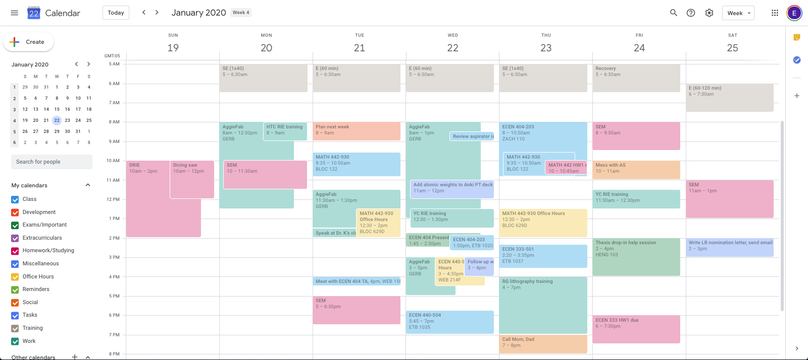
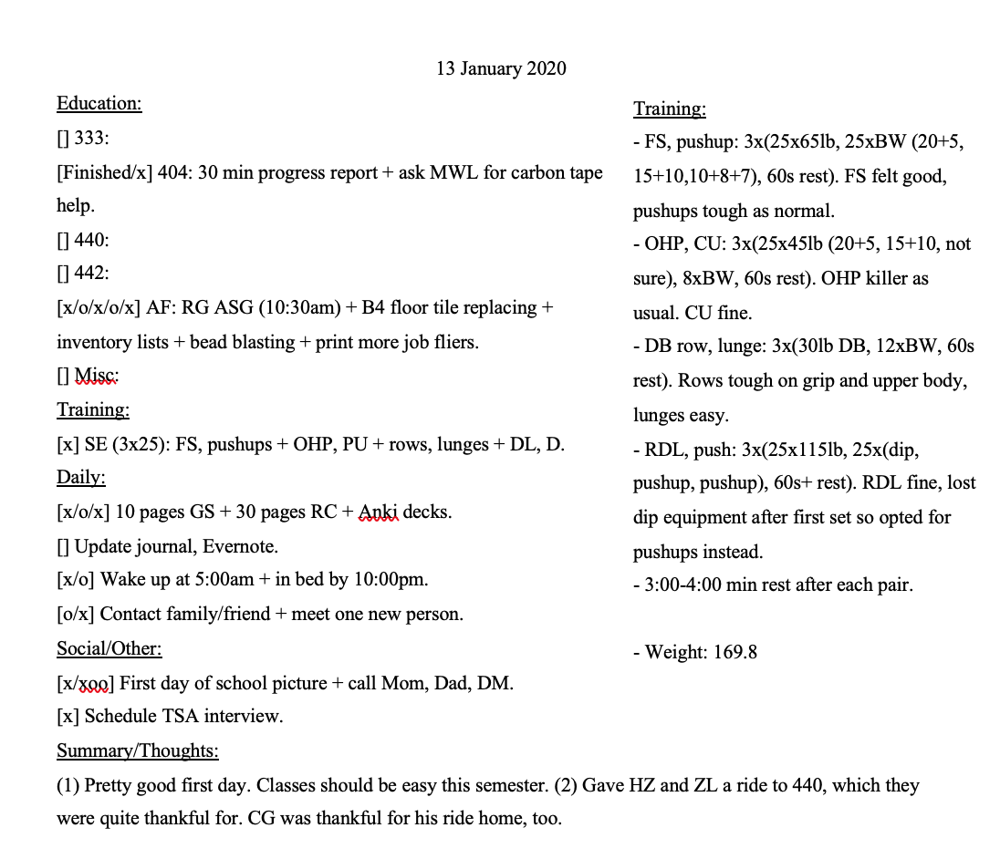
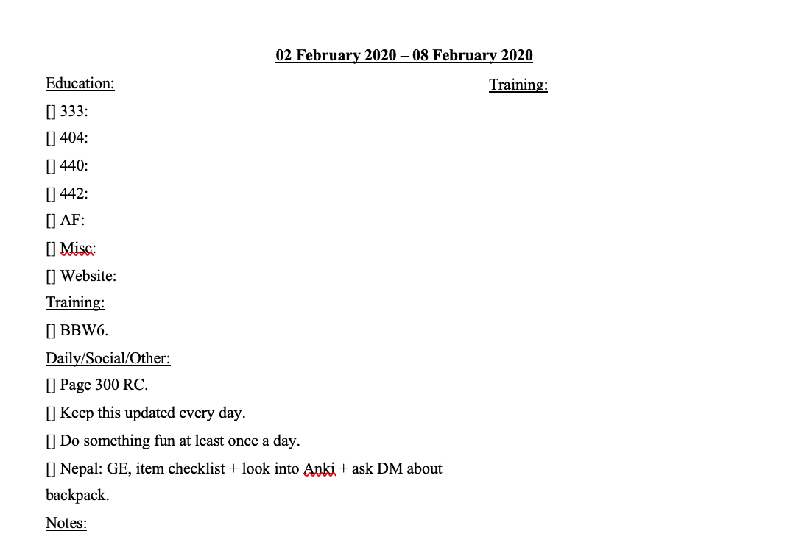

Productivity
Productivity boils down to the optimization and efficiency of time. The systems, applications, and methods used should attempt to minimize both time and effort spent doing monotonous or tedious tasks. Some general principles:
-
Every app used should sync to both desktop and mobile devices. This prevents items, like notes or appointments, from being inaccessible on either device.
-
The system/method used should consume as little time as possible.
Time Organization
First, time needs to be organized properly. This means using a calendar app that can sync to both desktop and mobile devices: Google Calendar (GC, website, Wikipedia), Microsoft Outlook (website, Wikipedia), and Apple's Calendar (website, Wikipedia) are all well-known, popular choices.
GC will be used as an example.
Separate color-coded calendars can be used for each aspect of your life, e.g., social activities, course work, chores. This is helpful for a few reasons:
-
The colors allow you to visually see where you are spending a majority of your time.
-
You can better distinguish between events.
-
Each individual calendar can be customized with notifications, sharing, and so on.
Below is what a typical calendar week looks like for me. (Greyed-out as it was many months ago.)

Typical week during university
While it looks like a lot, it really isn't too much. There are 12 calendars on the left, each with their own notification style:
-
Class: University lectures, labs, and recitations. 15 minute notification via pop-up box on laptop and phone.
-
Development: Planning, reflection. No notification.
-
Exams/Important: University exams, important appointments. 14, 7, 5, 3, and 1 day notification via email.
-
Extracurriculars: Clubs. No notification.
-
Homework/Studying: Homework, studying, miscellaneous school tasks. No notification.
-
Miscellaneous: No notification.
-
Office Hours: Office hours for each professor. There as a reminder so there is no need to search the syllabus. No notification.
-
Reminders: No notification.
-
Social: Hanging out/activities with friends or family. 30 minute notification via email.
-
Tasks: [Not used]
-
Training: Exercise time. No notification.
-
Work: Overall work schedule (long blocks) and specific tasks (short blocks overlapping long blocks). 15 minute notification via pop-up box on laptop and phone.
Everything that needs to be done at a certain time or lasts a certain amount of time gets put on the calendar to remind, help expect what's upcoming, and prevents double-booking.
To-Do List
A to-do list (TDL) serves to remind and plan the following day, week, or even month. Any note-taking or word processor will do: Microsoft Word (website, Wikipedia), Microsoft OneNote (website, Wikipedia), and Evernote (website, Wikipedia) are all well-known, popular choices.
Below is what a typical TDL day looks like for for me:

Typical day on to-do list
My TDL for a standard day is organized into six sections, each with different subfields:
-
Education: The number fields are for the courses I was taking, the AF field is my work, and the miscellaneous field is for anything that doesn't fit into those categories.
-
Training: Exercise for the day.
-
Daily: Daily habits and reminders for the day.
-
Social/Other: Social activities with friends or family, chores, other miscellaneous tasks.
-
Summary/Thoughts: A place to write down what I did that day or anything I'm feeling.
Training (box): Specific details of my session that day. Helps to track progress over months and years.
Below is what a typical TDL week looks like for for me:

Typical day on to-do list
My TDL for a standard week is organized into five sections that are almost identical to the day: education, training, daily/social/other, notes, and training (box). I use fields to keep track of my goals for the week, e.g., reach page 300 of the book I'm reading or make sure I'm doing something fun every day.
Time Optimization and Reduction
Optimization
Read the essay on time optimization here and think about ways to apply it to your life.
Reduction
The best way to reduce computer task time is through a search app: Alref (website, Wikipedia), Quicksilver (website, Wikipedia) are popular applications for MacOS. (Not sure about Windows or Linux apps.)
These (Alfred, in my case) expedite many processes:
-
Internet search: Instead of opening up a browser, opening up a new tab, going to a specific website, then typing in the search, a simple command button + spacebar brings up the Alfred search bar, "wiki + [search element name]" is entered, and the Wikipedia page is brought up.
-
File search: Instead of opening Finder and going through many folders to find the file, a simple "Find + [search element name]" in the Alfred search bar finds it immediately. You can also search within files for strings
-
Other: Perform math, define custom web searches, and access the dictionary.
Note-taking
Random Advice
See Also